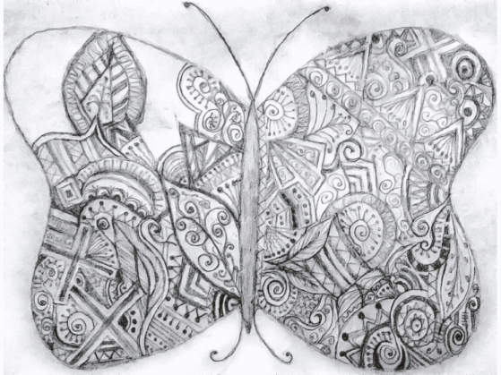

CODE
My skillset includes Java, C, SQL, HTML, CSS, JavaScript, Bootstrap, Git, Wordpress and JUnit, among others.
Academically, my projects have ranged from Cache simulators and Processor Emulators in C to Simplified Search Engines in Java.
I can make websites like this one and am passionate about thoughtful UI for anything I build. Additionally, I've done some coding in generative art (like the revolving star) using Processing that you can find on my github!

RESEARCH, WRITING & ART
I also have a blog where I have written about tech-related topics. Finally, I make art and like to work with various different mediums.